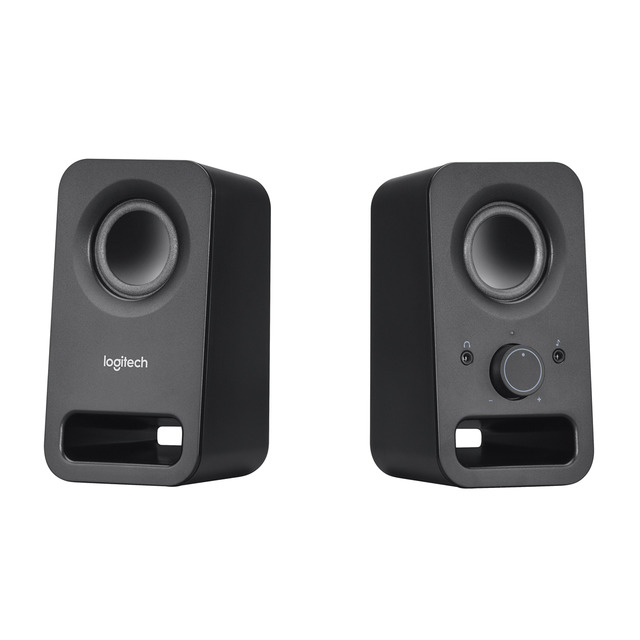

Es un dispositivo de de salida que nos permite reproduccir sonidos. Sus principales caracteristicas: Es tipo de sonido (Estereo , 5.1 o 7.1), respuesta en frecuencia y la potencia entre otras .
|  Altavoces Logitech Multimedia Speaker Z150 2.0 Negro |
CaracterísticasTipo de altavoces: Sistema 2.0 Número de altavoces: 2 Conexiones de entrada: Jack de audio de 3.5mm |
| Atras o Volver |